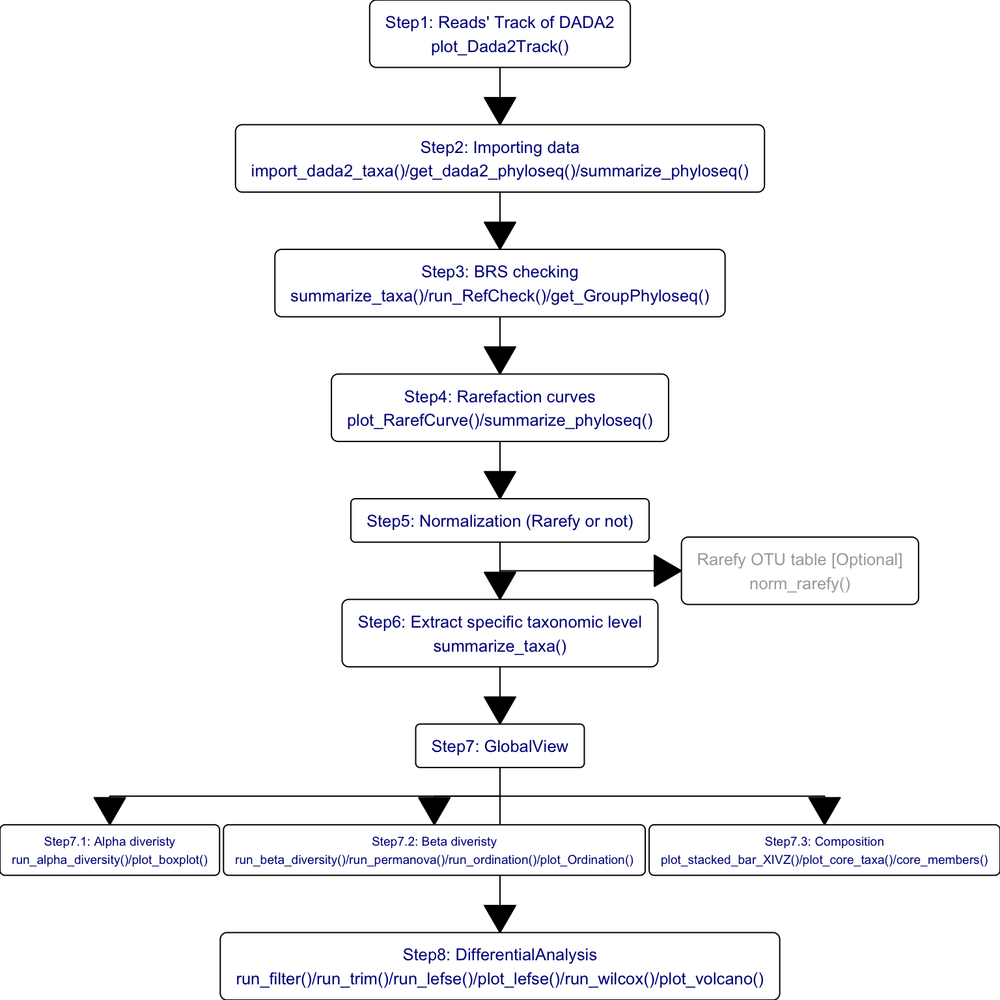
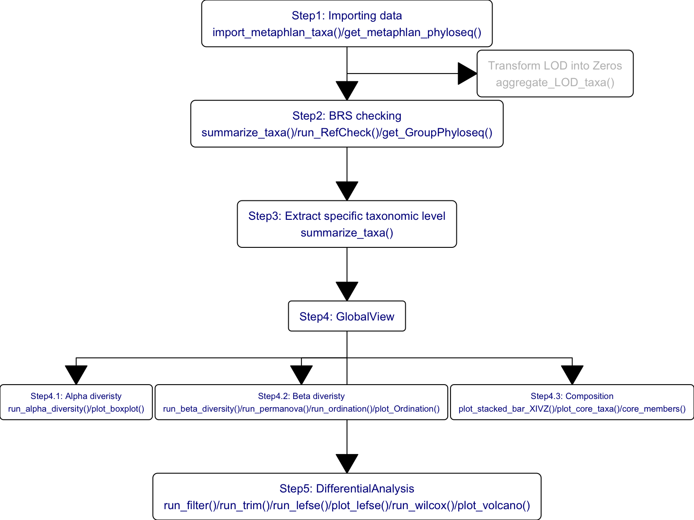

Chapter 14 Examples
Here, we give users two examples to practice the data analysis workflow by XMAS 2.0. By the way, we also recommend users handling your own microbiota data in a reasonable manner when you utilize this package or workflow. Pay attention to whether your data fit the methods this package provided.
14.2 Workflow description
The standard data analysis of 16S and MGS data by XMAS 2.0.
- 16S

Figure 14.1: Functions of XMAS 2.0 in 16s
- MGS

Figure 14.2: Functions of XMAS 2.0 in MGS
14.3 Amplicon sequencing (16s)
The upstream process is performed by in-house pipeline. and this example just shows how to perform downstream data analysis. In briefly, the example comprises the following steps:
Converting inputs into phyloseq object;
Quality Evaluation;
Pre-Processing Data;
Diversity analysis;
Ordination analysis;
Composition analysis;
Differential analysis.
14.3.1 Converting inputs into phyloseq-class object
dada2 result from standardized_analytics_workflow_R_function.
/home/xuxiaomin/project/standardized_analytics_workflow_R_function/demo_data/16S/process/xdada2/dada2_res.rds
/home/xuxiaomin/project/standardized_analytics_workflow_R_function/demo_data/16S/process/fasta2tree/tree.nwk
/home/xuxiaomin/project/standardized_analytics_workflow_R_function/demo_data/16S/metadata.txt
# dada2 results from in-house 16s pipeline
dada2_res <- readRDS(
system.file(
"extdata", "dada2_res.rds",
package = "XMAS2"
)
)
# the metadata matches to dada2 result
sam_tab <- read.table(
system.file(
"extdata", "dada2_metadata.tsv",
package = "XMAS2"
),
sep = "\t",
header = TRUE,
stringsAsFactors = FALSE
)
# tree file from dada2 reference data silva
tree <- phyloseq::read_tree(
system.file(
"extdata", "tree.nwk",
package = "XMAS2"
)
)
tax_tab <- import_dada2_taxa(dada2_taxa = dada2_res$tax_tab)
otu_tab <- dada2_res$seq_tab
sam_tab <- sam_tab %>% tibble::column_to_rownames("seqID")
# Shouldn't use the Total Number as SampleID (wrong: 123456; right: X123456)
rownames(otu_tab) <- paste0("S", rownames(otu_tab))
rownames(sam_tab) <- paste0("S", rownames(sam_tab))
dada2_ps <- get_dada2_phyloseq(
seq_tab = otu_tab,
tax_tab = tax_tab,
sam_tab = sam_tab,
phy_tree = tree)
dada2_ps## phyloseq-class experiment-level object
## otu_table() OTU Table: [ 896 taxa and 24 samples ]
## sample_data() Sample Data: [ 24 samples by 1 sample variables ]
## tax_table() Taxonomy Table: [ 896 taxa by 7 taxonomic ranks ]
## phy_tree() Phylogenetic Tree: [ 896 tips and 893 internal nodes ]
## refseq() DNAStringSet: [ 896 reference sequences ]Here, the phyloseq object comprises five components (OTU Table, Sample Data, Taxonomy Table, Phylogenetic Tree and DNAStringSet).
14.3.1.1 Summarize phyloseq-class object
summarize_phyloseq(ps = dada2_ps)
## Compositional = NO2
## 1] Min. number of reads = 511812] Max. number of reads = 936223] Total number of reads = 15025374] Average number of reads = 62605.70833333335] Median number of reads = 619157] Sparsity = 0.8653738839285716] Any OTU sum to 1 or less? NO8] Number of singletons = 09] Percent of OTUs that are singletons
## (i.e. exactly one read detected across all samples)010] Number of sample variables are: 1Group2
## [[1]]
## [1] "1] Min. number of reads = 51181"
##
## [[2]]
## [1] "2] Max. number of reads = 93622"
##
## [[3]]
## [1] "3] Total number of reads = 1502537"
##
## [[4]]
## [1] "4] Average number of reads = 62605.7083333333"
##
## [[5]]
## [1] "5] Median number of reads = 61915"
##
## [[6]]
## [1] "7] Sparsity = 0.865373883928571"
##
## [[7]]
## [1] "6] Any OTU sum to 1 or less? NO"
##
## [[8]]
## [1] "8] Number of singletons = 0"
##
## [[9]]
## [1] "9] Percent of OTUs that are singletons\n (i.e. exactly one read detected across all samples)0"
##
## [[10]]
## [1] "10] Number of sample variables are: 1"
##
## [[11]]
## [1] "Group"The minus account of the OTU counts is 51181 in the phyloseq object, and we can use it as the threshold to rarefy.
Notice the Sparsity (0.865), indicating the data has many zeros and pay attention to the downstream data analysis. A common property of amplicon based microbiota data generated by sequencing.
14.3.2 Quality Control
Quality control of DADA2 results will help us have more rational determinations on the further data analysis.
14.3.2.1 Reads track by DADA2
Figure 14.3: Reads track by DADA2 (16s example)
The percentage of the final remained read counts approximate 70%, indicating that we should consider the sequence depth for analysis when we build the sequence library.
14.3.2.2 Spike-in sample (BRS) assessment
- Extract the genus level phyloseq and getting the BRS_ID
## Group
## S6030 BB
## S6032 BB
## S6033 BB
## S6035 AA
## S6036 BB
## S6037 AA
## S6040 BB
## S6043 AA
## S6045 BB
## S6046 BB
## S6048 BB
## S6049 AA
## S6050 BB
## S6054 BB
## S6055 BB
## S6058 BB
## S6059 AA
## S6060 AA
## S6061 AA
## S6063 BB
## S6065 AA
## S6066 AA
## S6068 BB
## S8005 QCThe BRS_ID is S8005 .
- Run
run_RefCheck2
## Noting: the Reference Matrix is for 16s
## S8005 is in the Reference Matrix's samples and remove it to run
##
## ############Matched baterica of the BRS sample#############
## The number of BRS' bacteria matched the Reference Matrix is [15]
## g__Bifidobacterium
## g__Bacteroides
## g__Faecalibacterium
## g__Lactobacillus
## g__Parabacteroides
## g__Collinsella
## g__Coprococcus_3
## g__Dorea
## g__Streptococcus
## g__Roseburia
## g__Anaerostipes
## g__Escherichia_Shigella
## g__Enterococcus
## g__Prevotella_9
## g__Eggerthella
##
## The number of the additional bacteria compared to Reference Matrix is [1]
## ###########################################################
##
## ##################Status of the BRS sample##################
## Whether the BRS has the all bateria of Reference Matrix: TRUE
## Correlation Coefficient of the BRS is: 0.9714
## Bray Curtis of the BRS is: 0.07607
## Impurity of Max additional genus (g__Cutibacterium) of the BRS is: 0.06409
## ###########################################################
## #####Final Evaluation Results of the BRS #######
## The BRS of sequencing dataset passed the cutoff of the Reference Matrix
## Cutoff of Coefficient is 0.8946
## Cutoff of BrayCurtis is 0.1425
## Cutoff of Impurity is 0.1565
## ###########################################################
## $Matrix
## 8002 8003 8004 8006 8007 8008 8009 8005 mean
## Bifidobacterium 31.11079015 30.88310969 32.31232692 18.4930259 20.20409870 17.96225391 18.03588291 27.22437034 24.52823232
## Bacteroides 20.44753484 14.46581958 24.57151411 26.7370147 25.85863655 27.51353663 26.99272343 24.23896093 23.85321759
## Faecalibacterium 0.79850615 0.62937893 1.05531023 1.7487249 1.64282727 1.96346413 1.81219797 1.04035376 1.33634542
## Lactobacillus 2.61732573 3.36856272 3.44379163 5.9292703 5.78000836 5.78189064 6.32672332 3.87088505 4.63980722
## Parabacteroides 7.11124408 7.45952579 5.36075144 8.7149995 8.01840234 8.74899584 8.62634005 5.61833757 7.45732457
## Collinsella 0.12792605 0.88271385 0.55665744 1.2764130 0.67921372 1.89356397 1.26367828 0.45502126 0.89189845
## Coprococcus_3 1.00380683 0.97969362 0.80270938 1.6693557 1.56419908 1.67969035 1.71221463 0.87586251 1.28594151
## Dorea 2.80715148 3.45564660 2.46613277 3.9684605 3.99163530 3.81529666 3.69382881 2.34880690 3.31836988
## Streptococcus 2.91960260 3.43387563 2.59149764 3.4818362 3.31409452 3.51378702 3.37721491 2.68740253 3.16491388
## Roseburia 0.03404484 0.04750030 0.02806676 0.0338295 0.03178586 0.02503886 0.02499583 0.03311188 0.03229673
## Anaerostipes 0.32291011 0.43245062 0.31528329 0.5386697 0.44500209 0.53416240 0.48047548 0.32471000 0.42420796
## Escherichia_Shigella 15.27581475 16.00265210 12.36527954 10.8423545 13.43203680 10.15743185 11.59945565 14.03516268 12.96377349
## Enterococcus 14.51444842 14.66472707 11.04239952 13.1674820 12.07360937 12.88771113 12.84924735 11.61906390 12.85233610
## Prevotella_9 0.77374627 3.07465463 2.75709154 2.9145415 2.52446675 3.04952478 2.84952508 5.40257632 2.91826586
## Eggerthella 0.04951976 0.15437596 0.27131203 0.4840221 0.43998327 0.47365181 0.35549631 0.16128688 0.29870601
## Impurity_level 0.08562792 0.06531291 0.05987576 0.0000000 0.00000000 0.00000000 0.00000000 0.06409000 0.03436332
##
## $Assess
## Gold_Cutoff BRS
## Coef 0.8946 0.97140
## Bray 0.1425 0.07607
## Impurity(max) 1.0000 0.0640914.3.2.3 Spike-in samples remove
dada2_ps_remove_BRS <- get_GroupPhyloseq(
ps = dada2_ps,
group = "Group",
group_names = "QC",
discard = TRUE)
dada2_ps_remove_BRS## phyloseq-class experiment-level object
## otu_table() OTU Table: [ 896 taxa and 23 samples ]
## sample_data() Sample Data: [ 23 samples by 1 sample variables ]
## tax_table() Taxonomy Table: [ 896 taxa by 7 taxonomic ranks ]
## phy_tree() Phylogenetic Tree: [ 896 tips and 893 internal nodes ]
## refseq() DNAStringSet: [ 896 reference sequences ]14.3.2.4 Rarefaction curves
plot_RarefCurve(ps = dada2_ps_remove_BRS,
taxa_level = "OTU",
step = 400,
label = "Group",
color = "Group")## rarefying sample S6030
## rarefying sample S6032
## rarefying sample S6033
## rarefying sample S6035
## rarefying sample S6036
## rarefying sample S6037
## rarefying sample S6040
## rarefying sample S6043
## rarefying sample S6045
## rarefying sample S6046
## rarefying sample S6048
## rarefying sample S6049
## rarefying sample S6050
## rarefying sample S6054
## rarefying sample S6055
## rarefying sample S6058
## rarefying sample S6059
## rarefying sample S6060
## rarefying sample S6061
## rarefying sample S6063
## rarefying sample S6065
## rarefying sample S6066
## rarefying sample S6068Figure 14.4: Rarefaction curves (16s example)
The result showed that all the samples had different sequence depth but had the full sample richness.
14.3.3 Data processing
This part has too may procedures and we only choose some of them. Please go to Chapter 6 to see more approaches and details for being familiar with this part.
14.3.3.1 Rarefy otu counts
From previous results of quality evaluation, the sequence depth of samples are different which have effects on the downstream analysis. Here, choosing the rarefy (Normaliztion method: random subsampling counts to the smallest library size) to get the equal sample sums.
## phyloseq-class experiment-level object
## otu_table() OTU Table: [ 891 taxa and 23 samples ]
## sample_data() Sample Data: [ 23 samples by 1 sample variables ]
## tax_table() Taxonomy Table: [ 891 taxa by 7 taxonomic ranks ]
## phy_tree() Phylogenetic Tree: [ 891 tips and 888 internal nodes ]
## refseq() DNAStringSet: [ 891 reference sequences ]In addition, we could also perform some other normalization methods on the rarefied phyloseq object. By the way, we didnt transform the data by using log algorithm because the count matrix is required by the following data analysis methods.
14.3.3.2 Extracting specific taxonomic level
dada2_ps_rare_genus <- summarize_taxa(ps = dada2_ps_rarefy,
taxa_level = "Genus")
dada2_ps_rare_genus## phyloseq-class experiment-level object
## otu_table() OTU Table: [ 198 taxa and 23 samples ]
## sample_data() Sample Data: [ 23 samples by 1 sample variables ]
## tax_table() Taxonomy Table: [ 198 taxa by 6 taxonomic ranks ]14.3.3.3 Filtering the low relative abundance or unclassified taxa by the threshold (total counts < 10)
dada2_ps_rare_genus_filter <- run_filter(ps = dada2_ps_rare_genus,
cutoff = 10,
unclass = TRUE)
dada2_ps_rare_genus_filter ## phyloseq-class experiment-level object
## otu_table() OTU Table: [ 98 taxa and 23 samples ]
## sample_data() Sample Data: [ 23 samples by 1 sample variables ]
## tax_table() Taxonomy Table: [ 98 taxa by 6 taxonomic ranks ]14.3.3.4 Trimming the taxa with low occurrence less than threshold
dada2_ps_rare_genus_filter_trim <- run_trim(object = dada2_ps_rare_genus_filter,
cutoff = 0.2,
trim = "feature")
dada2_ps_rare_genus_filter_trim## phyloseq-class experiment-level object
## otu_table() OTU Table: [ 83 taxa and 23 samples ]
## sample_data() Sample Data: [ 23 samples by 1 sample variables ]
## tax_table() Taxonomy Table: [ 83 taxa by 6 taxonomic ranks ]Finally, we obtained the final phyloseq-class object dada2_ps_rare_genus_filter_trim and changed its name.
14.3.4 Diversity analysis
14.3.4.1 Alpha diveristy
- Calculate the alpha diversity
Notes: the otu table must be counts matrix (rarefied but not trim counts matrix) when you choose Observed etc measures.
dada_ps_rare_genus_alpha <- run_alpha_diversity(ps = dada2_ps_rare_genus,
measures = c("Shannon", "Chao1", "Observed"))
print(dada_ps_rare_genus_alpha)## TempRowNames Group Observed Chao1 se.chao1 Shannon
## 1 S6030 BB 74 74.00000 0.0000000 2.622800
## 2 S6032 BB 38 38.00000 0.0000000 1.711068
## 3 S6033 BB 80 80.16667 0.5431879 2.719495
## 4 S6035 AA 35 35.00000 0.1232013 1.953807
## 5 S6036 BB 95 95.00000 0.0000000 2.942657
## 6 S6037 AA 35 35.00000 0.0000000 1.933007
## 7 S6040 BB 58 58.00000 0.0000000 2.490198
## 8 S6043 AA 65 65.33333 0.9246628 2.098003
## 9 S6045 BB 60 60.00000 0.0000000 2.920363
## 10 S6046 BB 71 71.00000 0.1241166 2.264433
## 11 S6048 BB 66 66.00000 0.0000000 2.630421
## 12 S6049 AA 60 60.00000 0.0000000 2.506885
## 13 S6050 BB 53 53.00000 0.0000000 2.431334
## 14 S6054 BB 84 84.00000 0.0000000 2.769973
## 15 S6055 BB 75 75.00000 0.0000000 2.297388
## 16 S6058 BB 37 37.00000 0.2465985 2.262059
## 17 S6059 AA 71 71.00000 0.0000000 2.682960
## 18 S6060 AA 48 48.00000 0.0000000 1.883809
## 19 S6061 AA 80 80.00000 0.0000000 3.088651
## 20 S6063 BB 38 38.00000 0.0000000 1.543267
## 21 S6065 AA 77 77.00000 0.0000000 2.877568
## 22 S6066 AA 67 67.00000 0.0000000 2.638564
## 23 S6068 BB 40 40.00000 0.0000000 2.100363- visualization
plot_boxplot(data = dada_ps_rare_genus_alpha,
y_index = c("Shannon", "Chao1", "Observed"),
group = "Group",
group_names = c("AA", "BB"),
group_color = c("red", "blue"),
method = "wilcox.test")Figure 14.5: Alpha diversity (16s example)
14.3.4.2 Beta diversity
- beta dipersion
# dada2_ps_beta <- run_beta_(ps = dada2_ps_rare_genus_filter_trim,
# method = "bray",
# group = "Group")
# dada2_ps_beta$BetaDispersion
run_beta_dispersion(ps = dada2_ps_rare_genus_filter_trim,
method = "bray",
group = "Group")##
## Permutation test for homogeneity of multivariate dispersions
## Permutation: free
## Number of permutations: 999
##
## Response: Distances
## Df Sum Sq Mean Sq F N.Perm Pr(>F)
## Groups 1 0.014137 0.0141374 1.6657 999 0.202
## Residuals 21 0.178236 0.0084874
##
## Pairwise comparisons:
## (Observed p-value below diagonal, permuted p-value above diagonal)
## AA BB
## AA 0.21
## BB 0.21087## Df Sum Sq Mean Sq F N.Perm Pr(>F)
## Groups 1 0.0141374 0.0141374 1.665691 999 0.20214.3.5 PERMANOVA + Ordination
14.3.5.1 PERMANOVA
dada2_ps_per <- run_permanova(ps = dada2_ps_rare_genus_filter_trim,
method = "bray",
columns = "Group")
print(dada2_ps_per)## SumsOfSample Df SumsOfSqs MeanSqs F.Model R2 Pr(>F) AdjustedPvalue
## Group 23 1 0.2289051 0.2289051 1.333088 0.05969115 0.223 0.223The PERMANOVA result of the Group (Pr(>F) > 0.05) revealed that the two groups had not the distinct patterns of microbial community.
14.3.5.2 Ordination
We performed ordination by using Principal Coordinate Analysis (PCoA). If you want to try other methods please go to see Chapter 8 for more details.
dada2_ps_ordination <- run_ordination(
ps = dada2_ps_rare_genus_filter_trim,
group = "Group",
method = "PCoA")
plot_Ordination(ResultList = dada2_ps_ordination,
group = "Group",
group_names = c("AA", "BB"),
group_color = c("blue", "red"))Figure 14.6: PCoA (16s example)
14.3.6 Microbial composition
A whole picture of the microbial composition.
14.3.6.1 Stacked barplot
- XMAS package
## [1] "This palatte have 20 colors!"Figure 14.7: Microbial composition (16s example)
- XVIZ package

Figure 14.8: Microbial composition (16s example) XVIZ
14.3.6.2 Core microbiota
- convert absolute abundance into relative abundance
dada2_ps_rare_genus_filter_trim_rb <- XMAS2::normalize(object = dada2_ps_rare_genus_filter_trim,
method = "TSS")
dada2_ps_rare_genus_filter_trim_rb## phyloseq-class experiment-level object
## otu_table() OTU Table: [ 83 taxa and 23 samples ]
## sample_data() Sample Data: [ 23 samples by 1 sample variables ]
## tax_table() Taxonomy Table: [ 83 taxa by 6 taxonomic ranks ]- visualization
prevalences <- seq(0.05, 1, 0.05)
detections <- 10^seq(log10(1e-3), log10(0.2), length = 10)
pl_core <- plot_core_taxa(dada2_ps_rare_genus_filter_trim_rb,
plot.type = "heatmap",
colours = gray(seq(0, 1, length=5)),
prevalences = prevalences,
detections = detections,
min.prevalence = 0.5)+
xlab("Detection Threshold (Relative Abundance (%))")
pl_core
Figure 14.9: Core taxa (16s example)
The degree of color indicates the size of abundance and prevalence.
- Use
core_membersto obtain the core taxa. detection for abundance and prevalence for occurrence.
core_taxa_name <- core_members(dada2_ps_rare_genus_filter_trim_rb, detection = 0.01, prevalence = 0.8)
print(core_taxa_name)## [1] "g__Bifidobacterium" "g__Blautia"Result:
Only 2 genera (g__Bifidobacterium and g__Blautia) passed the threshold of detection and prevalence which we choose.
14.3.7 Differential Analysis
There are more than 10 approaches to perform differential analysis. Here, we choose two of them and recommend users going to Chapter 10 to see more detials.
14.3.7.1 Liner discriminant analysis (LDA) effect size (LEfSe)
- Calculation
# dada2_ps_lefse <- run_lefse(
# ps = dada2_ps_rare_genus_filter_trim,
# group = "Group",
# group_names = c("AA", "BB"),
# norm = "CPM",
# Lda = 2)
dada2_ps_lefse <- run_lefse2(
ps = dada2_ps_rare_genus_filter_trim,
group = "Group",
group_names = c("AA", "BB"),
norm = "CPM",
lda_cutoff = 2)
head(dada2_ps_lefse)## TaxaID Block LDA_Score Enrichment EffectSize Pvalue Log2FoldChange (Median)\nAA_vs_BB
## 1 g__Clostridium_sensu_stricto_1 9_AA vs 14_BB 3.989367 BB 2.393458 0.005225385 NA
## 2 g__Intestinibacter 9_AA vs 14_BB 3.401850 BB 2.095183 0.007746971 NA
## 3 g__Lactobacillus 9_AA vs 14_BB 4.541419 BB 2.351692 0.037446557 -3.335507
## 4 g__Odoribacter 9_AA vs 14_BB -2.956501 AA 1.743137 0.032745426 NA
## 5 g__Parasutterella 9_AA vs 14_BB -3.997841 AA 2.091653 0.036513630 4.400349
## 6 g__Romboutsia 9_AA vs 14_BB 4.019602 BB 2.771988 0.007839137 -6.859316
## Median Abundance\n(All) Median Abundance\nAA Median Abundance\nBB Log2FoldChange (Mean)\nAA_vs_BB Mean Abundance\n(All)
## 1 225.71974 0.00000 1177.85428 -4.745276 5870.1925
## 2 383.70882 0.00000 1402.64816 -1.963798 1886.7924
## 3 1286.16050 521.13869 5260.66779 -5.172830 19970.3868
## 4 21.95438 605.54943 0.00000 2.099245 579.0073
## 5 173.39662 1081.33826 51.20642 4.481898 3909.0175
## 6 2195.63745 50.38418 5849.97508 -3.333827 7104.3451
## Mean Abundance\nAA Mean Abundance\nBB Occurrence (100%)\n(All) Occurrence (100%)\nAA Occurrence (100%)\nBB Odds Ratio (95% CI)
## 1 351.1518 9418.1472 60.87 22.22 85.71 4900 (4900;4900)
## 2 682.1993 2661.1738 60.87 22.22 85.71 3.4 (5.8;1)
## 3 893.5890 32234.0425 86.96 77.78 92.86 1e+08 (1e+08;1e+08)
## 4 1085.5805 253.3531 52.17 77.78 35.71 0.31 (-2;2.6)
## 5 9339.5437 417.9649 65.22 88.89 50.00 0.0025 (-12;12)
## 6 1088.1764 10971.8822 78.26 55.56 92.86 76 (84;67)- Visualization
# # don't run this code when you do lefse in reality
# dada2_ps_lefse$LDA_Score <- dada2_ps_lefse$LDA_Score * 1000
plot_lefse(
da_res = dada2_ps_lefse,
x_index = "LDA_Score",
x_index_cutoff = 1,
group_color = c("green", "red"))
Figure 14.10: Lefse analysis (16s example)
14.3.7.2 Wilcoxon Rank-Sum test
- Calculation
dada2_ps_wilcox <- run_wilcox(
ps = dada2_ps_rare_genus_filter_trim,
group = "Group",
group_names = c("AA", "BB"))
head(dada2_ps_wilcox)## TaxaID Block Enrichment EffectSize Statistic Pvalue AdjustedPvalue Log2FoldChange (Median)\nAA_vs_BB
## 1 g__Acidaminococcus 9_AA vs 14_BB Nonsignif 70.56349 63.5 1.0000000 1.0000000 NA
## 2 g__Actinomyces 9_AA vs 14_BB Nonsignif 39.65079 44.5 0.2556616 0.6753999 -0.9577718
## 3 g__Adlercreutzia 9_AA vs 14_BB Nonsignif 23.17460 44.0 0.1980169 0.6753999 NA
## 4 g__Agathobacter 9_AA vs 14_BB Nonsignif 1222.58730 71.0 0.6293971 0.9164905 0.1524904
## 5 g__Akkermansia 9_AA vs 14_BB Nonsignif 104.78571 64.5 0.9304707 0.9775831 NA
## 6 g__Alistipes 9_AA vs 14_BB Nonsignif 23.03175 67.0 0.8239942 0.9497378 -0.1085245
## Median Abundance\n(All) Median Abundance\nAA Median Abundance\nBB Log2FoldChange (Rank)\nAA_vs_BB Mean Rank Abundance\nAA
## 1 0 0 0.0 0.01201252 12.06
## 2 30 26 50.5 -0.42227633 9.94
## 3 0 0 9.0 -0.43387758 9.89
## 4 316 329 296.0 0.17342686 12.89
## 5 0 0 0.0 0.03358045 12.17
## 6 64 64 69.0 0.08724541 12.44
## Mean Rank Abundance\nBB Occurrence (100%)\n(All) Occurrence (100%)\nAA Occurrence (100%)\nBB Odds Ratio (95% CI)
## 1 11.96 21.74 22.22 21.43 0.67 (-0.11;1.5)
## 2 13.32 82.61 88.89 78.57 4.1 (6.8;1.3)
## 3 13.36 43.48 33.33 50.00 8.6 (13;4.3)
## 4 11.43 65.22 55.56 71.43 0.39 (-1.4;2.2)
## 5 11.89 21.74 22.22 21.43 1.5 (2.3;0.71)
## 6 11.71 73.91 77.78 71.43 0.88 (0.64;1.1)- Volcano
plot_volcano(
da_res = dada2_ps_wilcox,
group_names = c("AA", "BB"),
x_index = "Log2FoldChange (Rank)\nAA_vs_BB",
x_index_cutoff = 0.5,
y_index = "Pvalue",
y_index_cutoff = 0.05,
group_color = c("red", "grey", "blue"),
topN = 5)
Figure 14.11: Wilcoxon Rank-Sum test (16s example)
14.4 Metagenomics (MGS)
The metagenomic data analysis pipeline is just the same as 16s. In briefly, the example comprises the following steps:
Converting inputs into phyloseq object;
Quality Evaluation;
Pre-Processing Data;
Diversity analysis;
Ordination analysis;
Composition analysis;
14.4.1 Converting inputs into phyloseq-class object
The result of the in-house Metaphlan2/3 pipeline:
/home/xuxiaomin/project/standardized_analytics_workflow_R_function/demo_data/MGS/metaphlan2_merged.tsv
/home/xuxiaomin/project/standardized_analytics_workflow_R_function/demo_data/MGS/metadata.txt
metaphlan2_res <- read.table(
system.file(
"extdata", "metaphlan2_merged.tsv",
package = "XMAS2"
),
header = TRUE,
stringsAsFactors = FALSE
)
metaphlan2_sam <- read.table(
system.file(
"extdata", "metaphlan2_metadata.tsv",
package = "XMAS2"
),
sep = "\t",
header = TRUE,
stringsAsFactors = FALSE
)
metaphlan2_res_list <- import_metaphlan_taxa(data_metaphlan2 = metaphlan2_res,
taxa_level = "Species")
otu_tab <- metaphlan2_res_list$abu_tab
tax_tab <- metaphlan2_res_list$tax_tab
sam_tab <- metaphlan2_sam %>% tibble::column_to_rownames("SampleID")
metaphlan2_ps <- get_metaphlan_phyloseq(
otu_tab = otu_tab,
sam_tab = sam_tab,
tax_tab = tax_tab)
metaphlan2_ps## phyloseq-class experiment-level object
## otu_table() OTU Table: [ 322 taxa and 23 samples ]
## sample_data() Sample Data: [ 23 samples by 2 sample variables ]
## tax_table() Taxonomy Table: [ 322 taxa by 7 taxonomic ranks ]Here, the phyloseq object comprises three components (OTU Table, Sample Data and Taxonomy Table).
14.4.1.1 Summarize phyloseq-class object
## Compositional = NO2## 1] Min. number of reads = 0.97918492] Max. number of reads = 1.00000023] Total number of reads = 22.92652624] Average number of reads = 0.9968054869565225] Median number of reads = 0.99980247] Sparsity = 0.7103699702943566] Any OTU sum to 1 or less? YES8] Number of singletons = 3199] Percent of OTUs that are singletons
## (i.e. exactly one read detected across all samples)010] Number of sample variables are: 2Groupphynotype2## [[1]]
## [1] "1] Min. number of reads = 0.9791849"
##
## [[2]]
## [1] "2] Max. number of reads = 1.0000002"
##
## [[3]]
## [1] "3] Total number of reads = 22.9265262"
##
## [[4]]
## [1] "4] Average number of reads = 0.996805486956522"
##
## [[5]]
## [1] "5] Median number of reads = 0.9998024"
##
## [[6]]
## [1] "7] Sparsity = 0.710369970294356"
##
## [[7]]
## [1] "6] Any OTU sum to 1 or less? YES"
##
## [[8]]
## [1] "8] Number of singletons = 319"
##
## [[9]]
## [1] "9] Percent of OTUs that are singletons\n (i.e. exactly one read detected across all samples)0"
##
## [[10]]
## [1] "10] Number of sample variables are: 2"
##
## [[11]]
## [1] "Group" "phynotype"Notice the Sparsity (0.713), indicating the data has many zeros and pay attention to the downstream data analysis.
14.4.2 Quality Control
14.4.2.1 Spike-in sample (BRS) assessment
- Extract the species level phyloseq and obtain the BRS_ID
metaphlan2_ps_species <- summarize_taxa(ps = metaphlan2_ps,
taxa_level = "Species")
metaphlan2_ps_species@sam_data## Group phynotype
## s1 BB 0.00
## s2 AA 2.50
## s3 BB 0.00
## s4 AA 1.25
## s5 AA 30.00
## s6 AA 15.00
## s7 BB 8.75
## s8 BB 0.00
## s9 BB 3.75
## s10 BB 2.50
## s11 BB 15.00
## s12 BB 2.50
## s13 BB 2.50
## s14 BB 0.00
## s15 BB 1.07
## s16 BB 2.50
## s17 AA 5.00
## s18 BB 35.00
## s19 BB 7.50
## s20 BB 15.00
## s21 AA 3.75
## s22 AA 3.75
## refE QC NA- Run
run_RefCheck
## Noting: the Reference Matrix is for MGS
##
## ############Matched baterica of the BRS sample#############
## The number of BRS' bacteria matched the Reference Matrix is [15]
## s__Bifidobacterium_adolescentis
## s__Bifidobacterium_longum
## s__Bifidobacterium_pseudocatenulatum
## s__Collinsella_aerofaciens
## s__Bacteroides_ovatus
## s__Bacteroides_thetaiotaomicron
## s__Bacteroides_uniformis
## s__Bacteroides_vulgatus
## s__Bacteroides_xylanisolvens
## s__Prevotella_copri
## s__Streptococcus_salivarius
## s__Coprococcus_comes
## s__Dorea_formicigenerans
## s__Roseburia_hominis
## s__Faecalibacterium_prausnitzii
## The number of bacteria unmatched the Reference Matrix is [11]
## s__Propionibacterium_acnes
## s__Bifidobacterium_bifidum
## s__Eggerthella_unclassified
## s__Bacteroides_fragilis
## s__Bacteroides_intestinalis
## s__Parabacteroides_goldsteinii
## s__Enterococcus_faecalis
## s__Enterococcus_faecium
## s__Lactobacillus_pentosus
## s__Lactobacillus_salivarius
## s__Escherichia_coli
## The number of the additional bacteria compared to the Reference Matrix is [57]
## ###########################################################
##
## ##################Status of the BRS sample##################
## Whether the BRS has the all bateria of Reference Matrix: FALSE
## Correlation Coefficient of the BRS is: -0.1179
## Bray Curtis of the BRS is: 0.8761
## Impurity of the BRS is: 32.76
## ###########################################################
## #####Final Evaluation Results of the BRS #######
## The BRS of sequencing dataset didn't pass the cutoff of the Reference Matrix
## ###########################################################
## $Matrix
## 7682 7683 7684 7685 7842 7843 7844 7845 refE mean
## Propionibacterium_acnes 0.28649 0.22355 0.32199 0.28276 0.37568 0.44201 0.41135 0.39489 NA 0.30430222
## Bifidobacterium_adolescentis 7.05611 6.28460 6.57297 6.25448 4.69357 4.80628 4.94943 4.84278 0.04649 5.05630111
## Bifidobacterium_bifidum 1.32803 1.19346 1.26883 1.05154 1.34640 1.40471 1.43721 1.48097 NA 1.16790556
## Bifidobacterium_longum 10.31832 9.25812 9.69184 7.76031 11.03311 11.61484 12.29030 11.69019 0.01646 9.29705444
## Bifidobacterium_pseudocatenulatum 6.89760 6.36177 7.39605 5.76804 6.19464 6.47094 7.41615 6.27837 0.15023 5.88153222
## Collinsella_aerofaciens 0.56189 0.53249 0.60476 0.47934 0.65513 0.68833 0.76063 0.66896 0.07251 0.55822667
## Eggerthella_unclassified 1.21416 1.06143 1.19122 0.85743 1.36030 1.48457 1.61204 1.50700 NA 1.14312778
## Bacteroides_fragilis 6.56752 7.19828 7.27658 7.31998 7.10174 6.70626 6.60219 6.11088 NA 6.09815889
## Bacteroides_intestinalis 0.09448 0.09550 0.10216 0.09326 0.08448 0.09556 0.08852 0.10469 NA 0.08429444
## Bacteroides_ovatus 3.08552 3.27226 3.10904 3.24565 3.51376 3.50063 3.37872 3.42300 0.25782 2.97626667
## Bacteroides_thetaiotaomicron 3.24207 3.31897 3.22418 3.43809 3.35611 3.38323 3.29098 3.30355 1.47422 3.11460000
## Bacteroides_uniformis 2.24271 2.24035 1.92015 2.18435 2.43230 2.38180 2.13830 2.41437 0.21061 2.01832667
## Bacteroides_vulgatus 3.06672 3.20369 3.14979 3.15352 3.24822 3.09280 3.13038 3.06113 2.14684 3.02812111
## Bacteroides_xylanisolvens 1.55687 1.84824 1.91166 1.85273 1.75220 1.74002 1.69811 1.67676 0.32466 1.59569444
## Parabacteroides_goldsteinii 5.92564 5.95499 6.04638 5.85282 6.85811 6.50800 6.35758 6.96646 NA 5.60777556
## Prevotella_copri 2.03757 1.99619 1.92504 2.15422 1.57638 1.60584 1.57913 1.59224 60.84109 8.36752222
## Enterococcus_faecalis 11.46695 12.46200 11.92117 11.95884 13.71474 13.67805 13.21782 13.27297 NA 11.29917111
## Enterococcus_faecium 4.57147 4.64943 4.52463 4.76407 5.45590 5.17641 5.15276 5.24896 NA 4.39373667
## Lactobacillus_pentosus 0.75844 0.75524 0.72958 0.80796 0.91548 0.89940 0.81308 0.94831 NA 0.73638778
## Lactobacillus_salivarius 4.89005 5.18462 5.12745 7.79194 2.72469 2.25673 2.10356 2.02202 NA 3.56678444
## Streptococcus_salivarius 3.54220 3.74119 3.62036 4.01546 2.90216 2.70193 2.61760 2.57348 0.02846 2.86031556
## Coprococcus_comes 2.28009 2.42978 2.25227 2.82904 1.21527 1.16485 1.07160 1.07834 0.01444 1.59285333
## Dorea_formicigenerans 4.83413 5.02149 5.18268 5.56891 3.34720 3.09877 3.08677 2.70732 0.02775 3.65278000
## Roseburia_hominis 0.04384 0.04183 0.04107 0.02304 0.03853 0.03464 0.03532 0.03597 0.01307 0.03414556
## Faecalibacterium_prausnitzii 0.65572 0.60153 0.60112 0.62079 0.54147 0.55383 0.58806 0.54655 1.61939 0.70316222
## Escherichia_coli 8.76957 8.33337 7.70416 8.11247 10.44118 10.33823 9.96261 11.06988 NA 8.30349667
## Impurity_level 2.70584 2.73563 2.58287 1.75896 3.12125 4.17134 4.20980 4.97996 32.76000 6.55840556
## Evaluation
## Propionibacterium_acnes refE didn't pass the threshold (2023-11-30 17:04:24).
## Bifidobacterium_adolescentis refE didn't pass the threshold (2023-11-30 17:04:24).
## Bifidobacterium_bifidum refE didn't pass the threshold (2023-11-30 17:04:24).
## Bifidobacterium_longum refE didn't pass the threshold (2023-11-30 17:04:24).
## Bifidobacterium_pseudocatenulatum refE didn't pass the threshold (2023-11-30 17:04:24).
## Collinsella_aerofaciens refE didn't pass the threshold (2023-11-30 17:04:24).
## Eggerthella_unclassified refE didn't pass the threshold (2023-11-30 17:04:24).
## Bacteroides_fragilis refE didn't pass the threshold (2023-11-30 17:04:24).
## Bacteroides_intestinalis refE didn't pass the threshold (2023-11-30 17:04:24).
## Bacteroides_ovatus refE didn't pass the threshold (2023-11-30 17:04:24).
## Bacteroides_thetaiotaomicron refE didn't pass the threshold (2023-11-30 17:04:24).
## Bacteroides_uniformis refE didn't pass the threshold (2023-11-30 17:04:24).
## Bacteroides_vulgatus refE didn't pass the threshold (2023-11-30 17:04:24).
## Bacteroides_xylanisolvens refE didn't pass the threshold (2023-11-30 17:04:24).
## Parabacteroides_goldsteinii refE didn't pass the threshold (2023-11-30 17:04:24).
## Prevotella_copri refE didn't pass the threshold (2023-11-30 17:04:24).
## Enterococcus_faecalis refE didn't pass the threshold (2023-11-30 17:04:24).
## Enterococcus_faecium refE didn't pass the threshold (2023-11-30 17:04:24).
## Lactobacillus_pentosus refE didn't pass the threshold (2023-11-30 17:04:24).
## Lactobacillus_salivarius refE didn't pass the threshold (2023-11-30 17:04:24).
## Streptococcus_salivarius refE didn't pass the threshold (2023-11-30 17:04:24).
## Coprococcus_comes refE didn't pass the threshold (2023-11-30 17:04:24).
## Dorea_formicigenerans refE didn't pass the threshold (2023-11-30 17:04:24).
## Roseburia_hominis refE didn't pass the threshold (2023-11-30 17:04:24).
## Faecalibacterium_prausnitzii refE didn't pass the threshold (2023-11-30 17:04:24).
## Escherichia_coli refE didn't pass the threshold (2023-11-30 17:04:24).
## Impurity_level refE didn't pass the threshold (2023-11-30 17:04:24).
##
## $Assess
## Gold_Cutoff BRS
## Coef 0.8726 -0.1179
## Bray 0.2064 0.8761
## Impurity 6.4400 32.7600The spike-in samples didnt pass the cutoff and failed to add the the Reference Matrix.
14.4.2.2 Spike-in samples remove
metaphlan2_ps_remove_BRS <- get_GroupPhyloseq(
ps = metaphlan2_ps,
group = "Group",
group_names = "QC",
discard = TRUE)
metaphlan2_ps_remove_BRS## phyloseq-class experiment-level object
## otu_table() OTU Table: [ 322 taxa and 22 samples ]
## sample_data() Sample Data: [ 22 samples by 2 sample variables ]
## tax_table() Taxonomy Table: [ 322 taxa by 7 taxonomic ranks ]14.4.3 Data processing
This part has too may procedures and we only choose some of them. Please go to Chapter 6 to see more approaches and details for being familiar with this part.
14.4.3.1 Extracting specific taxonomic level
metaphlan2_ps_species <- summarize_taxa(ps = metaphlan2_ps_remove_BRS,
taxa_level = "Species")
metaphlan2_ps_species## phyloseq-class experiment-level object
## otu_table() OTU Table: [ 321 taxa and 22 samples ]
## sample_data() Sample Data: [ 22 samples by 2 sample variables ]
## tax_table() Taxonomy Table: [ 321 taxa by 7 taxonomic ranks ]14.4.3.2 Filtering the low relative abundance or unclassified taxa by the threshold (total counts < 1e-4)
The condition to filter low relative abundance is according to this article (Thingholm et al. 2019).
Species from taxonomic profiles were retained for further analysis if their mean relative abundance exceeded 0.005 (0.5%) across the dataset with a minimum abundance of 0.05 (5%) in at least one sample and non-zero abundance in at least 60% of samples.
There are three conditions
Mean relative abundance: 0.005;
Minimum relative abundance: 0.05;
Occurrence: 60%.
Here, we use 0.01 (the 1e-4 regarded as 0.01 compared to the Referece because Metaphlan2 data had been divided 100)
metaphlan2_ps_species_filter <- run_filter(ps = metaphlan2_ps_species,
cutoff = 1e-4,
unclass = TRUE)
metaphlan2_ps_species_filter ## phyloseq-class experiment-level object
## otu_table() OTU Table: [ 158 taxa and 22 samples ]
## sample_data() Sample Data: [ 22 samples by 2 sample variables ]
## tax_table() Taxonomy Table: [ 158 taxa by 7 taxonomic ranks ]14.4.3.3 Trimming the taxa with low occurrence less than threshold
metaphlan2_ps_species_filter_trim <- run_trim(object = metaphlan2_ps_species_filter,
cutoff = 0.1,
trim = "feature")
metaphlan2_ps_species_filter_trim## phyloseq-class experiment-level object
## otu_table() OTU Table: [ 140 taxa and 22 samples ]
## sample_data() Sample Data: [ 22 samples by 2 sample variables ]
## tax_table() Taxonomy Table: [ 140 taxa by 7 taxonomic ranks ]Finally, we obtained the final phyloseq-class object metaphlan2_ps_species_filter_trim and changed its name.
14.4.4 Diversity analysis
14.4.4.1 Alpha diveristy
- Calculate the alpha diversity
Notes: choosing the measures (Shannon, Simpson and InvSimpson) only for relative abundance.
metaphlan2_ps_genus_alpha <- run_alpha_diversity(ps = metaphlan2_ps_remove_BRS,
measures = c("Shannon", "Simpson", "InvSimpson"))
head(metaphlan2_ps_genus_alpha)## TempRowNames Group phynotype Shannon Simpson InvSimpson
## 1 s1 BB 0.00 2.876002 0.9108857 11.221549
## 2 s2 AA 2.50 2.045392 0.8105742 5.279111
## 3 s3 BB 0.00 3.441176 0.9439371 17.837114
## 4 s4 AA 1.25 2.746155 0.8290417 5.849380
## 5 s5 AA 30.00 1.450722 0.6412178 2.787207
## 6 s6 AA 15.00 2.619951 0.8950369 9.527154- visualization
plot_boxplot(data = metaphlan2_ps_genus_alpha,
y_index = c("Shannon", "Simpson", "InvSimpson"),
group = "Group",
group_names = c("AA", "BB"),
group_color = c("red", "blue"),
method = "wilcox.test")Figure 14.12: Alpha diversity (MGS example)
14.4.4.2 Beta diversity
- beta dipersion
# metaphlan2_ps_beta <- run_beta_diversity(ps = metaphlan2_ps_species_filter_trim,
# method = "bray",
# group = "Group")
# metaphlan2_ps_beta$BetaDispersion
run_beta_dispersion(ps = metaphlan2_ps_species_filter_trim,
method = "bray",
group = "Group")##
## Permutation test for homogeneity of multivariate dispersions
## Permutation: free
## Number of permutations: 999
##
## Response: Distances
## Df Sum Sq Mean Sq F N.Perm Pr(>F)
## Groups 1 0.006014 0.0060141 0.7954 999 0.371
## Residuals 20 0.151230 0.0075615
##
## Pairwise comparisons:
## (Observed p-value below diagonal, permuted p-value above diagonal)
## AA BB
## AA 0.365
## BB 0.38309## Df Sum Sq Mean Sq F N.Perm Pr(>F)
## Groups 1 0.006014143 0.006014143 0.7953615 999 0.37114.4.5 PERMANOVA + Ordination
14.4.5.1 PERMANOVA
metaphlan2_ps_per <- run_permanova(ps = metaphlan2_ps_species_filter_trim,
method = "bray",
columns = "Group")
head(metaphlan2_ps_per)## SumsOfSample Df SumsOfSqs MeanSqs F.Model R2 Pr(>F) AdjustedPvalue
## Group 22 1 0.845706 0.845706 2.73086 0.1201389 0.002 0.002The PERMANOVA result of the Group (AdjustedPvalue < 0.05) revealed that the two groups had the distinct patterns of microbial community.
14.4.5.2 Ordination
We performed ordination by using Uniform Manifold Approximation and Projection for Dimension Reduction (UMAP). If you want to try other methods please go to see Chapter 8 for more details.
metaphlan2_ps_ordination <- run_ordination(
ps = metaphlan2_ps_species_filter_trim,
group = "Group",
method = "UMAP")
plot_Ordination(ResultList = metaphlan2_ps_ordination,
group = "Group",
group_names = c("AA", "BB"),
group_color = c("blue", "red"),
sample = TRUE,
sidelinechart = FALSE,
circle_type = "ellipse_line",
sideboxplot = TRUE)Figure 14.13: PCoA (MGS example)
14.4.6 Microbial composition
14.4.6.1 Stacked barplot
- XVIZ package

Figure 14.14: Microbial composition (MGS) XVIZ
- XMAS package
plot_StackBarPlot(
ps = metaphlan2_ps_species,
taxa_level = "Phylum",
group = "Group",
cluster = TRUE)## [1] "This palatte have 20 colors!"Figure 14.15: Microbial composition (MGS example)
14.4.6.2 Core microbiota
- visualization
library(RColorBrewer)
prevalences <- seq(0.05, 1, 0.05)
detections <- 10^seq(log10(1e-3), log10(.2), length = 10)
plot_core_taxa(metaphlan2_ps_species_filter_trim,
plot.type = "heatmap",
colours = rev(brewer.pal(5, "Spectral")),
prevalences = prevalences,
detections = detections,
min.prevalence = 0.5)+
xlab("Detection Threshold (Relative Abundance (%))") +
theme(axis.text.y = element_text(face="italic"))Figure 14.16: Core taxa (MGS example)
The degree of color indicates the size of abundance and prevalence.
- Use
core_membersto obtain the core taxa. detection for abundance and prevalence for occurrence.
core_taxa_name <- core_members(metaphlan2_ps_species_filter_trim,
detection = 0.001,
prevalence = 0.5)
print(core_taxa_name)## [1] "s__Bacteroides_ovatus" "s__Bacteroides_thetaiotaomicron" "s__Bacteroides_uniformis"
## [4] "s__Bacteroides_vulgatus" "s__Bifidobacterium_longum" "s__Bifidobacterium_pseudocatenulatum"
## [7] "s__Collinsella_aerofaciens" "s__Escherichia_coli" "s__Eubacterium_eligens"
## [10] "s__Eubacterium_hallii" "s__Faecalibacterium_prausnitzii" "s__Roseburia_inulinivorans"
## [13] "s__Ruminococcus_gnavus" "s__Ruminococcus_obeum" "s__Ruminococcus_sp_5_1_39BFAA"
## [16] "s__Ruminococcus_torques" "s__Streptococcus_salivarius"Result:
17 species passed the threshold of detection and prevalence which we choose.
14.4.7 Differential Analysis
There are more than 10 approaches to perform differential analysis. Here, we choose two of them and recommend users going to Chapter 10 to see more detials.
14.4.7.1 Liner discriminant analysis (LDA) effect size (LEfSe)
- Calculation
# metaphlan2_ps_lefse <- run_lefse(
# ps = metaphlan2_ps_species_filter_trim,
# group = "Group",
# group_names = c("AA", "BB"),
# norm = "CPM",
# Lda = 2)
metaphlan2_ps_lefse <- run_lefse2(
ps = metaphlan2_ps_species_filter_trim,
group = "Group",
group_names = c("AA", "BB"),
norm = "CPM",
lda_cutoff = 2)
head(metaphlan2_ps_lefse)## TaxaID Block LDA_Score Enrichment EffectSize Pvalue Log2FoldChange (Median)\nAA_vs_BB
## 1 s__Bacteroides_thetaiotaomicron 7_AA vs 15_BB -4.826720 AA 4.278888 0.005349957 5.418919
## 2 s__Bifidobacterium_adolescentis 7_AA vs 15_BB 4.697569 BB 3.845065 0.012732015 NA
## 3 s__Bifidobacterium_longum 7_AA vs 15_BB 4.717255 BB 1.968233 0.031365896 -4.652818
## 4 s__Clostridium_bartlettii 7_AA vs 15_BB 3.177558 BB 1.533233 0.048850983 NA
## 5 s__Collinsella_aerofaciens 7_AA vs 15_BB 4.175147 BB 3.121105 0.033120537 NA
## 6 s__Dorea_longicatena 7_AA vs 15_BB 4.003730 BB 3.263339 0.018910418 NA
## Median Abundance\n(All) Median Abundance\nAA Median Abundance\nBB Log2FoldChange (Mean)\nAA_vs_BB Mean Abundance\n(All)
## 1 2880.6116 46644.493 1090.2931 3.196812 24133.533
## 2 0.0000 0.000 3852.9342 NA 36085.659
## 3 11059.7586 1204.497 30300.0596 -3.715992 41261.284
## 4 287.8303 0.000 460.9082 -3.713334 1296.564
## 5 7694.5538 0.000 13242.2170 -3.239003 12659.440
## 6 828.5380 0.000 8760.0060 -7.366158 7116.615
## Mean Abundance\nAA Mean Abundance\nBB Occurrence (100%)\n(All) Occurrence (100%)\nAA Occurrence (100%)\nBB Odds Ratio (95% CI)
## 1 61480.34642 6705.020 90.91 100.00 86.67 0.064 (-5.3;5.5)
## 2 0.00000 52925.633 40.91 0.00 60.00 <NA>
## 3 4447.27254 58441.156 86.36 85.71 86.67 270 (280;260)
## 4 139.99665 1836.295 68.18 42.86 80.00 460 (470;440)
## 5 1873.94282 17692.672 63.64 42.86 73.33 28 (35;22)
## 6 63.08757 10408.261 63.64 42.86 73.33 3.8e+13 (3.8e+13;3.8e+13)- Visualization
# # don't run this code when you do lefse in reality
# metaphlan2_ps_lefse$LDA_Score <- metaphlan2_ps_lefse$LDA_Score * 100
plot_lefse(
da_res = metaphlan2_ps_lefse,
x_index = "LDA_Score",
x_index_cutoff = 2,
group_color = c("green", "red"))Figure 14.17: Lefse analysis (MGS example)
14.4.7.2 Wilcoxon Rank-Sum test
- Calculation
metaphlan2_ps_wilcox <- run_wilcox(
ps = metaphlan2_ps_species_filter_trim,
group = "Group",
group_names = c("AA", "BB"))
head(metaphlan2_ps_wilcox)## TaxaID Block Enrichment EffectSize Statistic Pvalue AdjustedPvalue Log2FoldChange (Median)\nAA_vs_BB
## 1 s__Acidaminococcus_fermentans 7_AA vs 15_BB Nonsignif 0.1123778 49.0 0.75333110 0.8862719 NA
## 2 s__Acidaminococcus_intestini 7_AA vs 15_BB Nonsignif 0.7508683 51.0 0.91657416 0.9786929 NA
## 3 s__Adlercreutzia_equolifaciens 7_AA vs 15_BB Nonsignif 0.6300047 28.0 0.05769072 0.3938692 NA
## 4 s__Akkermansia_muciniphila 7_AA vs 15_BB Nonsignif 1.3630629 63.0 0.23762783 0.5638626 NA
## 5 s__Alistipes_finegoldii 7_AA vs 15_BB Nonsignif 0.7590404 73.5 0.11454477 0.4635865 NA
## 6 s__Alistipes_indistinctus 7_AA vs 15_BB Nonsignif 0.3706772 66.0 0.26778154 0.5982091 NA
## Median Abundance\n(All) Median Abundance\nAA Median Abundance\nBB Log2FoldChange (Rank)\nAA_vs_BB Mean Rank Abundance\nAA
## 1 0 0.0000000 0.00e+00 -0.09269949 11.00
## 2 0 0.0000000 0.00e+00 -0.03907932 11.29
## 3 0 0.0000000 5.58e-05 -0.71479501 8.00
## 4 0 0.0000000 0.00e+00 0.26748031 13.00
## 5 0 0.0027362 0.00e+00 0.52169761 14.50
## 6 0 0.0000000 0.00e+00 0.34139504 13.43
## Mean Rank Abundance\nBB Occurrence (100%)\n(All) Occurrence (100%)\nAA Occurrence (100%)\nBB Odds Ratio (95% CI)
## 1 11.73 18.18 14.29 20.00 1.5 (2.4;0.69)
## 2 11.60 18.18 14.29 20.00 0.77 (0.26;1.3)
## 3 13.13 40.91 14.29 53.33 Inf (Inf;Inf)
## 4 10.80 13.64 28.57 6.67 0.83 (0.48;1.2)
## 5 10.10 45.45 57.14 40.00 0.0028 (-12;12)
## 6 10.60 31.82 42.86 26.67 0.067 (-5.2;5.4)- Volcano
plot_volcano(
da_res = metaphlan2_ps_wilcox,
group_names = c("AA", "BB"),
x_index = "Log2FoldChange (Rank)\nAA_vs_BB",
x_index_cutoff = 0.5,
y_index = "Pvalue",
y_index_cutoff = 0.05,
group_color = c("red", "grey", "blue"),
topN = 5)Figure 14.18: Wilcoxon Rank-Sum test (MGS example)
14.5 Systematic Information
## Session info
## setting value
## version R version 4.1.3 (2022-03-10)
## os macOS Monterey 12.2.1
## system x86_64, darwin17.0
## ui RStudio
## language (EN)
## collate en_US.UTF-8
## ctype en_US.UTF-8
## tz Asia/Shanghai
## date 2023-11-30
## rstudio 2023.09.0+463 Desert Sunflower (desktop)
## pandoc 3.1.1 @ /Applications/RStudio.app/Contents/Resources/app/quarto/bin/tools/ (via rmarkdown)
##
## Packages
## package * version date (UTC) lib source
## abind 1.4-5 2016-07-21 [2] CRAN (R 4.1.0)
## ade4 1.7-22 2023-02-06 [2] CRAN (R 4.1.2)
## ALDEx2 1.30.0 2022-11-01 [2] Bioconductor
## annotate 1.72.0 2021-10-26 [2] Bioconductor
## AnnotationDbi 1.60.2 2023-03-10 [2] Bioconductor
## ape * 5.7-1 2023-03-13 [2] CRAN (R 4.1.2)
## askpass 1.1 2019-01-13 [2] CRAN (R 4.1.0)
## backports 1.4.1 2021-12-13 [2] CRAN (R 4.1.0)
## base64enc 0.1-3 2015-07-28 [2] CRAN (R 4.1.0)
## bayesm 3.1-5 2022-12-02 [2] CRAN (R 4.1.2)
## Biobase * 2.54.0 2021-10-26 [2] Bioconductor
## BiocGenerics * 0.40.0 2021-10-26 [2] Bioconductor
## BiocParallel 1.28.3 2021-12-09 [2] Bioconductor
## biomformat 1.22.0 2021-10-26 [2] Bioconductor
## Biostrings 2.62.0 2021-10-26 [2] Bioconductor
## bit 4.0.5 2022-11-15 [2] CRAN (R 4.1.2)
## bit64 4.0.5 2020-08-30 [2] CRAN (R 4.1.0)
## bitops 1.0-7 2021-04-24 [2] CRAN (R 4.1.0)
## blob 1.2.4 2023-03-17 [2] CRAN (R 4.1.2)
## bookdown 0.34 2023-05-09 [2] CRAN (R 4.1.2)
## broom 1.0.5 2023-06-09 [2] CRAN (R 4.1.3)
## bslib 0.6.0 2023-11-21 [1] CRAN (R 4.1.3)
## cachem 1.0.8 2023-05-01 [2] CRAN (R 4.1.2)
## callr 3.7.3 2022-11-02 [2] CRAN (R 4.1.2)
## car 3.1-2 2023-03-30 [2] CRAN (R 4.1.2)
## carData 3.0-5 2022-01-06 [2] CRAN (R 4.1.2)
## caTools 1.18.2 2021-03-28 [2] CRAN (R 4.1.0)
## checkmate 2.2.0 2023-04-27 [2] CRAN (R 4.1.2)
## class 7.3-22 2023-05-03 [2] CRAN (R 4.1.2)
## classInt 0.4-9 2023-02-28 [2] CRAN (R 4.1.2)
## cli 3.6.1 2023-03-23 [2] CRAN (R 4.1.2)
## cluster 2.1.4 2022-08-22 [2] CRAN (R 4.1.2)
## coda 0.19-4 2020-09-30 [2] CRAN (R 4.1.0)
## codetools 0.2-19 2023-02-01 [2] CRAN (R 4.1.2)
## coin 1.4-2 2021-10-08 [2] CRAN (R 4.1.0)
## colorspace 2.1-0 2023-01-23 [2] CRAN (R 4.1.2)
## compositions 2.0-6 2023-04-13 [2] CRAN (R 4.1.2)
## conflicted * 1.2.0 2023-02-01 [2] CRAN (R 4.1.2)
## corrplot 0.92 2021-11-18 [2] CRAN (R 4.1.0)
## cowplot 1.1.1 2020-12-30 [2] CRAN (R 4.1.0)
## crayon 1.5.2 2022-09-29 [2] CRAN (R 4.1.2)
## crosstalk 1.2.0 2021-11-04 [2] CRAN (R 4.1.0)
## data.table 1.14.8 2023-02-17 [2] CRAN (R 4.1.2)
## DBI 1.1.3 2022-06-18 [2] CRAN (R 4.1.2)
## DelayedArray 0.20.0 2021-10-26 [2] Bioconductor
## DEoptimR 1.0-14 2023-06-09 [2] CRAN (R 4.1.3)
## DESeq2 1.34.0 2021-10-26 [2] Bioconductor
## devtools 2.4.5 2022-10-11 [2] CRAN (R 4.1.2)
## digest 0.6.33 2023-07-07 [1] CRAN (R 4.1.3)
## dplyr * 1.1.2 2023-04-20 [2] CRAN (R 4.1.2)
## DT 0.28 2023-05-18 [2] CRAN (R 4.1.3)
## e1071 1.7-13 2023-02-01 [2] CRAN (R 4.1.2)
## edgeR 3.36.0 2021-10-26 [2] Bioconductor
## ellipsis 0.3.2 2021-04-29 [2] CRAN (R 4.1.0)
## emmeans 1.8.7 2023-06-23 [1] CRAN (R 4.1.3)
## estimability 1.4.1 2022-08-05 [2] CRAN (R 4.1.2)
## evaluate 0.21 2023-05-05 [2] CRAN (R 4.1.2)
## FactoMineR 2.8 2023-03-27 [2] CRAN (R 4.1.2)
## fansi 1.0.4 2023-01-22 [2] CRAN (R 4.1.2)
## farver 2.1.1 2022-07-06 [2] CRAN (R 4.1.2)
## fastmap 1.1.1 2023-02-24 [2] CRAN (R 4.1.2)
## flashClust 1.01-2 2012-08-21 [2] CRAN (R 4.1.0)
## foreach 1.5.2 2022-02-02 [2] CRAN (R 4.1.2)
## foreign 0.8-84 2022-12-06 [2] CRAN (R 4.1.2)
## forestplot 3.1.1 2022-12-06 [2] CRAN (R 4.1.2)
## Formula 1.2-5 2023-02-24 [2] CRAN (R 4.1.2)
## fs 1.6.2 2023-04-25 [2] CRAN (R 4.1.2)
## genefilter 1.76.0 2021-10-26 [2] Bioconductor
## geneplotter 1.72.0 2021-10-26 [2] Bioconductor
## generics 0.1.3 2022-07-05 [2] CRAN (R 4.1.2)
## GenomeInfoDb * 1.30.1 2022-01-30 [2] Bioconductor
## GenomeInfoDbData 1.2.7 2022-03-09 [2] Bioconductor
## GenomicRanges * 1.46.1 2021-11-18 [2] Bioconductor
## ggiraph 0.8.7 2023-03-17 [2] CRAN (R 4.1.2)
## ggiraphExtra 0.3.0 2020-10-06 [2] CRAN (R 4.1.2)
## ggplot2 * 3.4.2 2023-04-03 [2] CRAN (R 4.1.2)
## ggpubr * 0.6.0 2023-02-10 [2] CRAN (R 4.1.2)
## ggrepel 0.9.3 2023-02-03 [2] CRAN (R 4.1.2)
## ggsci 3.0.0 2023-03-08 [2] CRAN (R 4.1.2)
## ggsignif 0.6.4 2022-10-13 [2] CRAN (R 4.1.2)
## ggVennDiagram 1.2.2 2022-09-08 [2] CRAN (R 4.1.2)
## glmnet 4.1-7 2023-03-23 [2] CRAN (R 4.1.2)
## glue * 1.6.2 2022-02-24 [2] CRAN (R 4.1.2)
## Gmisc * 3.0.2 2023-03-13 [2] CRAN (R 4.1.2)
## gplots 3.1.3 2022-04-25 [2] CRAN (R 4.1.2)
## gridExtra 2.3 2017-09-09 [2] CRAN (R 4.1.0)
## gtable 0.3.3 2023-03-21 [2] CRAN (R 4.1.2)
## gtools 3.9.4 2022-11-27 [2] CRAN (R 4.1.2)
## highr 0.10 2022-12-22 [2] CRAN (R 4.1.2)
## Hmisc 5.1-0 2023-05-08 [2] CRAN (R 4.1.2)
## htmlTable * 2.4.1 2022-07-07 [2] CRAN (R 4.1.2)
## htmltools 0.5.7 2023-11-03 [1] CRAN (R 4.1.3)
## htmlwidgets 1.6.2 2023-03-17 [2] CRAN (R 4.1.2)
## httpuv 1.6.11 2023-05-11 [2] CRAN (R 4.1.3)
## httr 1.4.6 2023-05-08 [2] CRAN (R 4.1.2)
## igraph 1.5.0 2023-06-16 [1] CRAN (R 4.1.3)
## insight 0.19.3 2023-06-29 [2] CRAN (R 4.1.3)
## IRanges * 2.28.0 2021-10-26 [2] Bioconductor
## iterators 1.0.14 2022-02-05 [2] CRAN (R 4.1.2)
## jquerylib 0.1.4 2021-04-26 [2] CRAN (R 4.1.0)
## jsonlite 1.8.7 2023-06-29 [2] CRAN (R 4.1.3)
## kableExtra 1.3.4 2021-02-20 [2] CRAN (R 4.1.2)
## KEGGREST 1.34.0 2021-10-26 [2] Bioconductor
## KernSmooth 2.23-22 2023-07-10 [2] CRAN (R 4.1.3)
## knitr 1.43 2023-05-25 [2] CRAN (R 4.1.3)
## labeling 0.4.2 2020-10-20 [2] CRAN (R 4.1.0)
## later 1.3.1 2023-05-02 [2] CRAN (R 4.1.2)
## lattice * 0.21-8 2023-04-05 [2] CRAN (R 4.1.2)
## leaps 3.1 2020-01-16 [2] CRAN (R 4.1.0)
## libcoin 1.0-9 2021-09-27 [2] CRAN (R 4.1.0)
## lifecycle 1.0.3 2022-10-07 [2] CRAN (R 4.1.2)
## limma 3.50.3 2022-04-07 [2] Bioconductor
## locfit 1.5-9.8 2023-06-11 [2] CRAN (R 4.1.3)
## LOCOM 1.1 2022-08-05 [2] Github (yijuanhu/LOCOM@c181e0f)
## lubridate 1.9.2 2023-02-10 [2] CRAN (R 4.1.2)
## magrittr * 2.0.3 2022-03-30 [2] CRAN (R 4.1.2)
## MASS 7.3-60 2023-05-04 [2] CRAN (R 4.1.2)
## Matrix 1.6-0 2023-07-08 [2] CRAN (R 4.1.3)
## MatrixGenerics * 1.6.0 2021-10-26 [2] Bioconductor
## matrixStats * 1.0.0 2023-06-02 [2] CRAN (R 4.1.3)
## mbzinb 0.2 2022-03-16 [2] local
## memoise 2.0.1 2021-11-26 [2] CRAN (R 4.1.0)
## metagenomeSeq 1.36.0 2021-10-26 [2] Bioconductor
## mgcv 1.8-42 2023-03-02 [2] CRAN (R 4.1.2)
## microbiome 1.16.0 2021-10-26 [2] Bioconductor
## mime 0.12 2021-09-28 [2] CRAN (R 4.1.0)
## miniUI 0.1.1.1 2018-05-18 [2] CRAN (R 4.1.0)
## modeltools 0.2-23 2020-03-05 [2] CRAN (R 4.1.0)
## multcomp 1.4-25 2023-06-20 [2] CRAN (R 4.1.3)
## multcompView 0.1-9 2023-04-09 [2] CRAN (R 4.1.2)
## multtest 2.50.0 2021-10-26 [2] Bioconductor
## munsell 0.5.0 2018-06-12 [2] CRAN (R 4.1.0)
## mvtnorm 1.2-2 2023-06-08 [2] CRAN (R 4.1.3)
## mycor 0.1.1 2018-04-10 [2] CRAN (R 4.1.0)
## NADA 1.6-1.1 2020-03-22 [2] CRAN (R 4.1.0)
## nlme * 3.1-162 2023-01-31 [2] CRAN (R 4.1.2)
## nnet 7.3-19 2023-05-03 [2] CRAN (R 4.1.2)
## openssl 2.0.6 2023-03-09 [2] CRAN (R 4.1.2)
## permute * 0.9-7 2022-01-27 [2] CRAN (R 4.1.2)
## pheatmap * 1.0.12 2019-01-04 [2] CRAN (R 4.1.0)
## phyloseq * 1.38.0 2021-10-26 [2] Bioconductor
## picante * 1.8.2 2020-06-10 [2] CRAN (R 4.1.0)
## pillar 1.9.0 2023-03-22 [2] CRAN (R 4.1.2)
## pkgbuild 1.4.2 2023-06-26 [2] CRAN (R 4.1.3)
## pkgconfig 2.0.3 2019-09-22 [2] CRAN (R 4.1.0)
## pkgload 1.3.2.1 2023-07-08 [2] CRAN (R 4.1.3)
## plyr 1.8.8 2022-11-11 [2] CRAN (R 4.1.2)
## png 0.1-8 2022-11-29 [2] CRAN (R 4.1.2)
## ppcor 1.1 2015-12-03 [2] CRAN (R 4.1.0)
## prettyunits 1.1.1 2020-01-24 [2] CRAN (R 4.1.0)
## processx 3.8.2 2023-06-30 [2] CRAN (R 4.1.3)
## profvis 0.3.8 2023-05-02 [2] CRAN (R 4.1.2)
## promises 1.2.0.1 2021-02-11 [2] CRAN (R 4.1.0)
## protoclust 1.6.4 2022-04-01 [2] CRAN (R 4.1.2)
## proxy 0.4-27 2022-06-09 [2] CRAN (R 4.1.2)
## ps 1.7.5 2023-04-18 [2] CRAN (R 4.1.2)
## pscl 1.5.5.1 2023-05-10 [2] CRAN (R 4.1.2)
## purrr 1.0.1 2023-01-10 [2] CRAN (R 4.1.2)
## qvalue 2.26.0 2021-10-26 [2] Bioconductor
## R6 2.5.1 2021-08-19 [2] CRAN (R 4.1.0)
## RAIDA 1.0 2022-03-14 [2] local
## RColorBrewer * 1.1-3 2022-04-03 [2] CRAN (R 4.1.2)
## Rcpp * 1.0.11 2023-07-06 [1] CRAN (R 4.1.3)
## RcppZiggurat 0.1.6 2020-10-20 [2] CRAN (R 4.1.0)
## RCurl 1.98-1.12 2023-03-27 [2] CRAN (R 4.1.2)
## remotes 2.4.2 2021-11-30 [2] CRAN (R 4.1.0)
## reshape2 1.4.4 2020-04-09 [2] CRAN (R 4.1.0)
## reticulate 1.30 2023-06-09 [2] CRAN (R 4.1.3)
## Rfast 2.0.8 2023-07-03 [2] CRAN (R 4.1.3)
## rhdf5 2.38.1 2022-03-10 [2] Bioconductor
## rhdf5filters 1.6.0 2021-10-26 [2] Bioconductor
## Rhdf5lib 1.16.0 2021-10-26 [2] Bioconductor
## rlang 1.1.1 2023-04-28 [1] CRAN (R 4.1.2)
## rmarkdown 2.23 2023-07-01 [2] CRAN (R 4.1.3)
## robustbase 0.99-0 2023-06-16 [2] CRAN (R 4.1.3)
## rpart 4.1.19 2022-10-21 [2] CRAN (R 4.1.2)
## RSpectra 0.16-1 2022-04-24 [2] CRAN (R 4.1.2)
## RSQLite 2.3.1 2023-04-03 [2] CRAN (R 4.1.2)
## rstatix 0.7.2 2023-02-01 [2] CRAN (R 4.1.2)
## rstudioapi 0.15.0 2023-07-07 [2] CRAN (R 4.1.3)
## Rtsne 0.16 2022-04-17 [2] CRAN (R 4.1.2)
## RVenn 1.1.0 2019-07-18 [2] CRAN (R 4.1.0)
## rvest 1.0.3 2022-08-19 [2] CRAN (R 4.1.2)
## S4Vectors * 0.32.4 2022-03-29 [2] Bioconductor
## sandwich 3.0-2 2022-06-15 [2] CRAN (R 4.1.2)
## sass 0.4.6 2023-05-03 [2] CRAN (R 4.1.2)
## scales 1.2.1 2022-08-20 [2] CRAN (R 4.1.2)
## scatterplot3d 0.3-44 2023-05-05 [2] CRAN (R 4.1.2)
## sessioninfo 1.2.2 2021-12-06 [2] CRAN (R 4.1.0)
## sf 1.0-7 2022-03-07 [2] CRAN (R 4.1.2)
## shape 1.4.6 2021-05-19 [2] CRAN (R 4.1.0)
## shiny 1.7.4.1 2023-07-06 [2] CRAN (R 4.1.3)
## sjlabelled 1.2.0 2022-04-10 [2] CRAN (R 4.1.2)
## sjmisc 2.8.9 2021-12-03 [2] CRAN (R 4.1.0)
## stringi 1.7.12 2023-01-11 [2] CRAN (R 4.1.2)
## stringr 1.5.0 2022-12-02 [2] CRAN (R 4.1.2)
## SummarizedExperiment * 1.24.0 2021-10-26 [2] Bioconductor
## survival 3.5-5 2023-03-12 [2] CRAN (R 4.1.2)
## svglite 2.1.1 2023-01-10 [2] CRAN (R 4.1.2)
## systemfonts 1.0.4 2022-02-11 [2] CRAN (R 4.1.2)
## tensorA 0.36.2 2020-11-19 [2] CRAN (R 4.1.0)
## TH.data 1.1-2 2023-04-17 [2] CRAN (R 4.1.2)
## tibble * 3.2.1 2023-03-20 [2] CRAN (R 4.1.2)
## tidyr 1.3.0 2023-01-24 [2] CRAN (R 4.1.2)
## tidyselect 1.2.0 2022-10-10 [2] CRAN (R 4.1.2)
## timechange 0.2.0 2023-01-11 [2] CRAN (R 4.1.2)
## truncnorm 1.0-9 2023-03-20 [2] CRAN (R 4.1.2)
## umap 0.2.10.0 2023-02-01 [2] CRAN (R 4.1.2)
## units 0.8-2 2023-04-27 [2] CRAN (R 4.1.2)
## urlchecker 1.0.1 2021-11-30 [2] CRAN (R 4.1.0)
## usethis 2.2.2 2023-07-06 [2] CRAN (R 4.1.3)
## utf8 1.2.3 2023-01-31 [2] CRAN (R 4.1.2)
## uuid 1.1-0 2022-04-19 [2] CRAN (R 4.1.2)
## vctrs 0.6.3 2023-06-14 [1] CRAN (R 4.1.3)
## vegan * 2.6-4 2022-10-11 [2] CRAN (R 4.1.2)
## viridis * 0.6.3 2023-05-03 [2] CRAN (R 4.1.2)
## viridisLite * 0.4.2 2023-05-02 [2] CRAN (R 4.1.2)
## webshot 0.5.5 2023-06-26 [2] CRAN (R 4.1.3)
## withr 2.5.0 2022-03-03 [2] CRAN (R 4.1.2)
## Wrench 1.12.0 2021-10-26 [2] Bioconductor
## xfun 0.40 2023-08-09 [1] CRAN (R 4.1.3)
## XMAS2 * 2.2.0 2023-11-30 [1] local
## XML 3.99-0.14 2023-03-19 [2] CRAN (R 4.1.2)
## xml2 1.3.5 2023-07-06 [2] CRAN (R 4.1.3)
## xtable 1.8-4 2019-04-21 [2] CRAN (R 4.1.0)
## XVector 0.34.0 2021-10-26 [2] Bioconductor
## yaml 2.3.7 2023-01-23 [2] CRAN (R 4.1.2)
## zCompositions 1.4.0-1 2022-03-26 [2] CRAN (R 4.1.2)
## zlibbioc 1.40.0 2021-10-26 [2] Bioconductor
## zoo 1.8-12 2023-04-13 [2] CRAN (R 4.1.2)
##
## [1] /Users/zouhua/Library/R/x86_64/4.1/library
## [2] /Library/Frameworks/R.framework/Versions/4.1/Resources/library
##
##